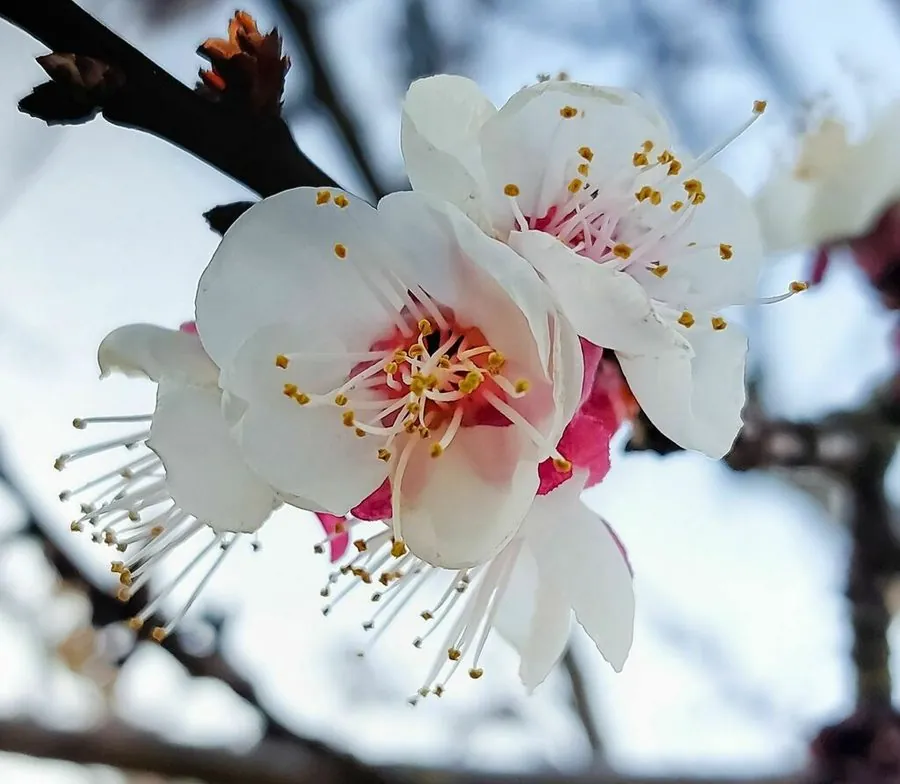

灌木与花木 · 植物界
杏花 Prunus armeniaca

中国北方常见的早春果树与观赏树，先花后叶、花色白里透红，果实甜美，杏仁可入药，栽培历史逾三千年。
- 分类
- 门被子植物门纲木兰纲目蔷薇目科蔷薇科属李属
- 栖息环境
- 海拔 2000 米以下的平原、丘陵与山地，喜光耐寒耐旱
- 地理分布
- 中国华北、西北、东北各地，全国各地广泛栽培
- 保护级别
- 暂无评估；中国未列入国家重点保护野生植物名录
物种志
杏为落叶乔木，高可达 12 m，树皮暗灰褐色、纵裂；叶片卵圆形至近圆形，边缘具细锯齿，先端渐尖。花期 3–4 月，先花后叶，花单生，花径 2–3 cm，花瓣 5 枚、白色至淡粉色，花萼紫红色；果实为核果，球形或扁圆形，成熟时黄白色至橙黄色，果肉多汁，内含扁圆形硬核，核仁即“杏仁”。
杏原产中国北部及中亚地区，中国华北、西北、东北栽培最盛，喜光、耐寒、耐旱，适宜深厚肥沃、排水良好的沙壤土，花期怕霜冻。栽培历史逾三千年，是中国北方重要的果树；果实可鲜食、制杏干与杏脯，杏仁分为甜杏仁与苦杏仁，苦杏仁含苦杏仁苷、有毒性，需炮制后入药，能止咳平喘。杏花是早春重要的观赏花卉，与桃花、梅花同为蔷薇科春季花木。
形态与习性
- 株高可达 12 m，树皮暗灰褐色
- 花期3–4 月，先花后叶
- 果期6–7 月，核果黄白色至橙黄色
- 光照喜光，不耐长期荫蔽
- 水分耐旱，怕积水
- 土壤深厚肥沃、排水良好的沙壤土
- 主要用途鲜食与杏干杏脯、苦杏仁入药、早春观赏
趣味知识
- 杏花先花后叶，花萼紫红、花瓣白里透粉，是北方早春常见的观赏花木。
- 杏仁分甜杏仁与苦杏仁，苦杏仁含苦杏仁苷，有毒，需炮制后入药。
- 杏花对霜冻敏感，北方春季的晚霜常造成杏花受冻、减产。
- 中国栽培杏的历史逾三千年，华北、西北是传统主产区。